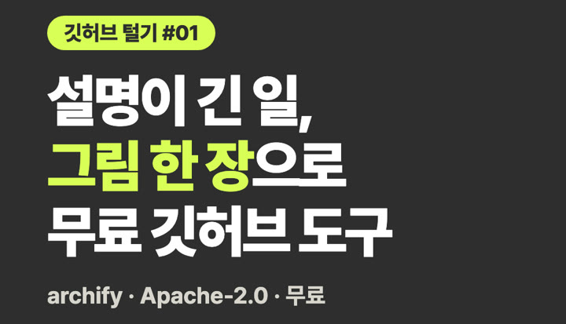

영상 1편을 글 7조각으로, 월 정액
유튜브 영상은 꾸준히 올리는데 스레드·링크드인·블로그까지는 손이 안 간다면, 영상 한 편을 채널마다 맞는 글 7조각 초안으로 바꿔 드립니다. 저도 제 릴스 한 편을 AI한테 시켜서 이렇게 나눠 쓰고 있습니다. 아래 견본이 그 실제 조각들입니다.
이런 분께
- 유튜브는 하는데 글 채널까지는 못 하는 1인 강사·코치·컨설턴트
- 영상 내용을 채널마다 다시 쓰는 게 귀찮아 한 곳에만 올리고 있는 분
받는 것
- 영상 한 달 4편 → 편마다 7조각, 한 달 28개 초안
- 7조각 = ① 블로그·홈페이지 정리 글 ② 스레드 글 ③ 링크드인 글 ④ 영어 짧은 글 ⑤ 표지·첫 화면 문구 ⑥ 링크 페이지 버튼 문구 ⑦ 정리표에 들어갈 한 줄
- 채널마다 길이·말투를 다르게 씁니다. 같은 글을 그대로 복사해 붙이지 않습니다.
- 초안은 확인하시고 직접 올리시면 됩니다. 편마다 한 번 고쳐 드립니다.
견본 — 릴스 한 편에서 실제로 나온 7조각
원재료: 「깃허브 털기 #01 · archify」 44초 릴스(2026-10-31). 업무 흐름을 그림 한 장으로 만드는 무료 도구를 직접 깔아 보고 찍은 영상입니다. 아래는 손대지 않고 옮긴 글입니다. 올린 뒤의 반응 숫자는 적지 않았습니다 — 여기서는 조각의 모양만 보여 드립니다.
① 블로그·홈페이지 정리 글 · heonlog.com 가이드 (첫 문단과 목차)
일 흐름을 아직 글로 길게 설명하고 있다면, 이 도구부터 보세요. archify는 아이디어·계획·업무 흐름을 말로 시키면 눌러 볼 수 있는 그림 한 장(웹페이지)으로 만들어 주는 깃허브 무료 도구입니다. 개발은 모르지만 AI한테 시켜서 직접 깔아 보고 쓴 그대로 적었습니다. 목차: 무엇을 하는 도구인가 · 설치 난이도 ⭐⭐⭐ (터미널 필요) · 깔면서 막힌 곳 · 써 본 결과 · 근데 함정이 있어요 · 이런 분께
② 스레드 글 · 반말 짧은 글
깃허브 털기 #01 · archify 설명하기 어려운 일을 그림 한 장(웹페이지 한 장)으로 만들어 주는 무료 도구임. 깃허브 tt-a1i/archify, Apache-2.0. 10-30에 AI한테 시켜서 깔았음. 그 뒤로 콘텐츠 만드는 흐름, 사업 지도, 일주일 계획을 이걸로 그렸음. 말로 시키면 흐름도가 나오고, 밝은 화면·어두운 화면 둘 다 되고, 그림 파일로도 내보낼 수 있음. 설치 난이도는 별 3개 만점에 3개. 터미널이 필요함. 함정: 혼자 켜지는 앱이 아님. 클로드 코드 같은 AI 비서 안에서 불러 써야 움직임.
③ 링크드인 글 · 한 주 동안 깐 도구 7개를 묶은 글 (archify는 첫 번째 줄)
개발을 모르는 제가 사흘 동안 깃허브 도구 7개를 깔았습니다. 깔기 전에 먼저 정한 건 「켜지 않을 기능」이었습니다. 깃허브 무료 도구는 설명서가 영어이고 터미널 명령을 요구합니다. 저는 AI 비서에게 「이거 깔아 줘, 깔기 전에 안에 뭐가 있는지 먼저 확인해 줘」라고 시킵니다. 그런데 깔고 나면 처음부터 켜져 있는 기능이 있었습니다. 그래서 세 가지를 지켰습니다. · 깔기 전에 안을 먼저 확인했습니다. 업무 흐름을 그림으로 그려 주는 도구는 하루 한 번 새 버전을 확인하러 밖으로 나가는 기능이 켜져 있어서 껐습니다. · 계정이 걸린 기능은 켜지 않았습니다. 인터넷 글을 읽어 오는 도구에 X·인스타 로그인 기능이 있었지만 계정이 제한될 위험이 있어 쓰지 않았습니다. 영상 도구도 유료 서비스 키를 넣지 않고 무료 기능만 씁니다. · AI 비서가 막히면 이유부터 봤습니다. 밖에서 받은 코드를 실행하는 일이라 보안 장치가 AI의 설치를 막았고, 무엇을 실행하는지 확인한 뒤 명령 한 줄을 제가 직접 붙여 넣었습니다. 결과입니다. · 6개는 깔린 채로 두었고, 1개는 지웠습니다. · 지운 것은 목소리 복제 도구입니다. 발음은 거의 맞게 나왔지만 끝까지 듣게 되는 힘이 약했습니다. 설치가 아니라 결과에서 멈춘 경우입니다. · 인터넷 글을 읽어 오는 도구는 기능 17개 중 13개가 작동했습니다. 레딧 검색은 아직 원인을 모릅니다. 다음에 바꿀 것도 하나 있습니다. 이번에 웹 디자인 스킬을 하나 더 깔았는데, 비슷한 일을 하는 스킬이 이미 있었습니다. 앞으로는 깔기 전에 「지금 있는 것으로 안 되는 일인지」부터 확인하겠습니다. 새 도구를 깔 때 가장 먼저 확인하시는 것은 무엇인가요? #깃허브 #AI활용 #비개발자
④ 영어 짧은 글 · 해외 채널용 한 문단
GitHub teardown #01: archify (free, Apache-2.0) turns a hard-to-explain workflow into a one-page diagram. We've used it since Oct 30 for our content pipeline and business map. Catch: it's not a standalone app; it runs inside an AI agent like Claude Code.
⑤ 표지·첫 화면 문구 · 릴스 표지 (글자 부분)

⑥ 링크 페이지 버튼 문구 · 인포크 링크 페이지 정사각형 버튼
설명이 긴 일, 그림 한 장으로 무료 깃허브 도구 archify · Apache-2.0 · 무료
표지와 같은 문구를 정사각형 버튼 그림에 맞게 줄을 다시 나눴습니다.
⑦ 정리표에 들어갈 한 줄 · 「유료 대신 무료」 대체표
Lucidchart·Whimsical 같은 도식 도구 유료 요금제 → archify (tt-a1i/archify · Apache-2.0 · ⭐⭐⭐) — 혼자 켜지는 앱이 아니라 AI 비서(클로드 코드·코덱스 등) 안에서 불러 쓰는 스킬입니다.
가격 시범 가격
월 99,000원 · 영상 4편 · 초안 28개
처음 열어 보는 서비스라 시범 가격입니다. 영상 길이가 아주 길면(30분 넘는 영상) 문의 때 먼저 말씀드립니다.
진행 순서
- 인포크 「비즈니스 제안」으로 문의합니다. 채널 주소를 함께 적어 주세요.
- 본인이 권리를 가진 영상인지 확인합니다.
- 평소 쓰시는 글 2~3개로 말투를 맞춥니다.
- 첫 영상 1편으로 7조각을 먼저 만들어 보여 드립니다.
- 괜찮으면 한 달 4편으로 이어 갑니다. 초안은 직접 확인하고 올리시면 됩니다.
하지 않는 것
- 조회수·팔로워·매출 보장
- 계정에 대신 올리기 (계정 비밀번호를 받지 않습니다)
- 영상에 없는 내용·숫자를 지어 넣기
- 권리가 없는 남의 영상 받기
- 의료·금융 주제 영상
문의
인포크 「비즈니스 제안」으로 문의하기링크 페이지의 「비즈니스 제안」 버튼에서 남길 수 있습니다. 결제는 이 사이트에서 받지 않습니다.